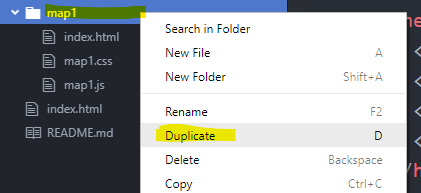
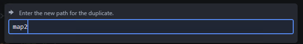
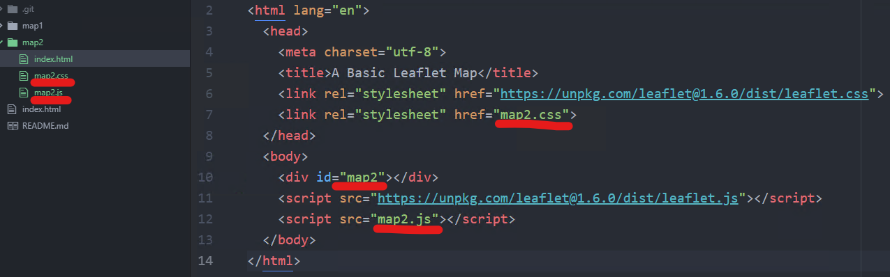

Lab Assignment 8
Web Services with Leaflet
Create a web map using Leaflet and overlay a Web Map Service (WMS) layer over a basemap.
Real-time precipitation and weather warnings (by county) displayed over the OpenStreetMap basemap.
Process
-
Instead of creating a new project from scratch, copy the previous assignment’s folder and rename it to
map2. Rename the previous.jsfile tomap2.jsand update thescripttag inindex.htmlto use the newmap2.js. Do the same for the.cssfile.


 -
In the JavaScript file, delete the parts from the previous assignment that created the points, lines, polygons, and popups, but leave the basemap. You will start adding the code for this assignment on the line below where you created the basemap layer in the previous assignment.
-
Use the
L.tileLayer.wmsmethod, giving it two parameters: a URL and an options object.L.tileLayer.wms('http://mesonet.agron.iastate.edu/cgi-bin/wms/nexrad/n0r.cgi', { layers: 'nexrad-n0r-900913', format: 'image/png', transparent: true, attribution: 'NOAA, Iowa State University' }).addTo(renameThisMap)The
formatandtransparentproperties might not be necessary for every WMS layer, but with this radar example, they prevent the appearance of a white background. -
Adjust the map properties to center and zoom the map on your layer.
-
Set a basemap that complements your WMS layer.
-
Try it: add a second layer (counties currently under a weather warning). For the
layersproperty, set the value towarnings_c. For the URL usehttps://mesonet.agron.iastate.edu/cgi-bin/wms/us/wwa.cgi
Requirements
- General best practices:
a. Scripts and styles in separate files
b. Your own page title
c. Proper indentation
d. No errors in the console - A basemap
- Appropriate zoom and center
- Rename variables and functions to something descriptive
Submit
- The URL to your map page:
https://yourname.github.io/map2
Appendix
Use an ArcGIS service as WMS
Many ArcGIS web services support WMS and can be used with Leaflet without needing a third-party plugin. For example, see those on the NOAA nowCOAST website’s layer list. A WMS URL from an ArcGIS Server will have /MapServer/WMSServer on the end and it will not contain /rest. For example compare the ArcGIS REST Service URL and the WMS URL for a national weather radar layer:
REST:
https://nowcoast.noaa.gov/arcgis/rest/services/nowcoast/radar_meteo_imagery_nexrad_time/MapServer
WMS:
https://nowcoast.noaa.gov/arcgis/services/nowcoast/radar_meteo_imagery_nexrad_time/MapServer/WMSServer
In addition to the WMS URL, Leaflet will need to know the layer number. This number is different from the number given on the ArcGIS service details page, and the process for finding it is not as easy. See this article from NOAA for an explanation. For the radar layer given above, the layer number is 1.
The URL, layer ID, and other parameters can be passed to the L.tileLayer.wms method:
L.tileLayer.wms('https://nowcoast.noaa.gov/arcgis/services/nowcoast/radar_meteo_imagery_nexrad_time/MapServer/WMSServer', {
layers: '1',
format: 'image/png',
transparent: true,
attribution: 'NOAA'
}).addTo(renameThisMap)
Use the esri-leaflet plugin to display ArcGIS services
The capabilities of Leaflet can be extended with third-party plugins, such as esri-leaflet. This plugin is especially useful for working with layers published to ArcGIS Online and ArcGIS Enterprise. The get started, add a reference to the esri-leaflet library in the head of your index.html, under Leaflet’s script tag:
<script src="https://unpkg.com/esri-leaflet@2.3.2/dist/esri-leaflet.js"></script>
Then in your JavaScript file, after the map object is created, use the L.esri.dynamicMapLayer method to add a layer from a REST URL:
L.esri.dynamicMapLayer({
url: 'https://nowcoast.noaa.gov/arcgis/rest/services/nowcoast/radar_meteo_imagery_nexrad_time/MapServer'
}).addTo(renameThisMap)